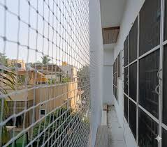
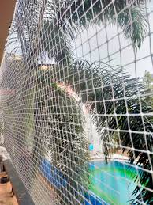

In addition to cricket nets, we also offer balcony safety nets, terrace nets, pigeon nets, swimming pool nets, invisible grills, and duct area nets across Yelahanka and nearby areas, delivering complete safety solutions for homes, apartments, schools, academies, and commercial spaces.

SSDJ Safety Nets is a leading provider of cricket safety nets in Yelahanka Bangalore, offering reliable and high-quality solutions for cricket grounds, practice pitches, schools, and sports academies. Our nets are specially designed to prevent balls from leaving the playing area and ensure complete safety for players, spectators, and nearby property.
We use premium-grade nylon nets that are UV-resistant, weatherproof, and long-lasting. Whether you need nets for a small terrace practice setup, a large cricket ground, or any residential or commercial space, we provide customized cricket net installation in Yelahanka Bangalore with strong support structures and professional service. In addition to cricket nets, we offer balcony safety nets, terrace nets, pigeon nets, swimming pool nets, invisible grills, and duct area nets across Yelahanka and nearby areas, ensuring maximum safety for homes, schools, academies, and commercial spaces. Our nets provide reliable performance, long-term durability, and peace of mind for players, families, and spectators.
Our cricket safety nets in Bangalore are designed to prevent injuries by stopping high-speed balls, ensuring complete safety for players.
We use premium, UV-resistant and weatherproof materials for long-lasting cricket nets that perform well in all outdoor conditions.
Get customized cricket net installation for practice cages, terraces, academies, and large grounds with flexible sizing options.
Our experienced team provides safe and professional cricket net installation in Bangalore for schools, sports complexes, and training facilities.
Fill out the form to book a free site inspection for cricket safety net installation in Bangalore. Our experts will assess your location and provide the best safety net solution for your ground, terrace, or practice area.
